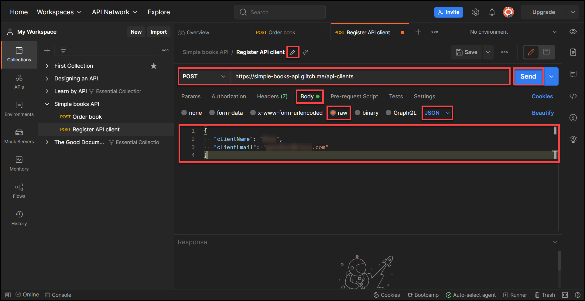

How to Create a POST API Request in Postman
Introduction
This article describes the process of creating a POST API request in Postman by using an example of creating a book order.
Contributed by Alexandra Pindrochova
Prerequisites
Before you start, ensure that you have the following:
Creating a POST API request in Postman
Step 1:
Go to Postman and log in to your Postman account by clicking the Sign In button.
Step result: The system displays the Sign In page.

Step 2:
On the Sign In page, enter your email or username and password in the respective fields, and then click Sign In.
Step result: The system displays the Home page.
Step 3:
On the Home page, from the Workspaces drop-down list in the header, select My Workspace.
Step result: The system displays My Workspace.

Step 4:
On the My Workspace page, create a new API request by clicking the plus icon in the main work area.
Step result: The system displays a new API request.

Step 5:
Enter the request URL into the API request bar and add the /orders endpoint.
For the purpose of this article https://simple-books-api.glitch.me/orders is used as an example.
From the http request methods drop-down list, select POST.
Save your request to a collection by clicking the drop-down list next to the Save button, and then select Save as.
Step result: The system displays the Save Request dialog box.

Step 6:
In the Save Request dialog box, enter the value for the Request name field, and then from the Save to list,
select either an existing collection or create a new collection. Click Save.

Step 7:
To submit an order, you need to register your API client by obtaining an access token.
To obtain an access token, refer to How to Obtain an Access Token in Postman.
Step 8:
In the API request, click the Authorization tab, and then from the Type drop-down list, select Bearer Token.
In the Token field, enter the variable that you set for your collection in Step 6.
For the purpose of the example used in this article, enter the {{accessToken}} variable. Click Save.

Step 9:
In the request, click Body, select the raw radio button, and then from the drop-down list, select JSON.
In the body, enter the code in JSON format to specify the object that you want to order.
Refer to Simple Books API documentation from the Prerequisites section, and then enter the following code:
{
"bookId": 1,
"customerName": "John"
}
Click Save, and then Send to submit your order.
Step result: The system displays the book that you ordered in the API response body.

How to Obtain an Access Token in Postman
Introduction
This article describes the process of obtaining an access token in Postman.
Contributed by Alexandra Pindrochova
Prerequisites
Before you start, ensure that you have the following:
- Active Postman account
- POST API request created in Postman (To create a POST API request in Postman, refer to How to Create a POST API request in Postman.
- API documentation specific to your URL (For the purpose of this article, refer to Simple Books API documentation.)
Obtaining an Access Token in Postman
Step 1:
Go to Postman and log in to your Postman account by clicking the Sign In button.
Step result: The system displays the Sign In page.
Step 2:
On the Sign In page, enter your email or username and password in the respective fields, and then click Sign In.
Step result: The system displays the Home page.
Step 3:
On the Home page, from the Workspaces drop-down list in the header, select My Workspace.
Step result: The system displays My Workspace.
Step 4:
From Collections, identify your collection, and then click View more actions next to the API request that you need to authenticate.
From the drop-down list, select Duplicate.
Step result: The system displays a new API request.
Step 5:
In the new API request, enter the request URL into the API request bar and add /api-clients endpoint.
For the purpose of this article https://simple-books-api.glitch.me/api-clients is used as an example. Hover over the API request name and
rename the request by clicking the pencil icon. In this example, the request is renamed to Register API client.
From the http request methods drop-down list, select POST. Click Body, select the raw radio button,
and then from the drop-down list, select JSON.
In the body, enter the code from an available documentation in JSON format.
Refer to Simple Books API documentation from the Prerequisites section, and then enter the following code:
{
"clientName": "Postman",
"clientEmail": "valentin@example.com"
}
Click
Send.

Step result: The system displays your access token in the API response body.
Step 6:
Copy the access token from the API response body. Click View more actions next to your collection, and then select Edit from the drop-down list.
Step result: The system displays actions available for your collection.
Step 7:
Click the Variables tab, and then add a new variable. For the purpose of this article accessToken is used as an example.
In the Initial Value column, enter the value that you want to share with your team when you share the variable in a collection, environment or globals.
You should not enter the actual value of your access token here as it is public. In the Current Value column,
enter the value of your access token which is private to you. Click Save.
Next Steps
Continue with Step 8 in How to Create a POST API Request in Postman.
How to Transfer a Product Instance (SLR)
Introduction
This article describes the process of transferring a product instance as part of specific license reservation (SLR) in Cisco Smart Software Manager (CSSM).
Prerequisites
Requirements
Before you start, ensure that you have the following:
Transferring a Product Instance (SLR)
Step 1:
Go to Cisco Software Central and log in with your Cisco.com account.
Step 2:
In the Smart Software Managersection, clickManage licenses.
Step 3:
On the Inventory tab, select the source Virtual account from which you want to transfer your product instance,
click Product Instances, and then in the search bar enter the Device or Product Type to filter your product instance.
Step result: The system displays your product instance.
Step 4:
In the Actions column, click the Actions drop-down, and then select Transfer.
Step result: The system displays the Transfer Product Instance dialog box.
Step 5:
In the Transfer Product Instance dialog box, select the Virtual account to which you want to transfer your product instance along with your reserved entitlements. Click Transfer.
Step result: The system displays a notification message that confirms that you successfully transferred the product instance.
Caution:
If the destination Virtual account does not have sufficient licenses to cover the usage required by the product instance that you are transferring,
then the system displays the License Shortage warning message that prompts you to transfer the licenses listed in the dialog box from your source Virtual account so that you remain in compliance.
You can either Continue or Cancel the transfer at this point in time. When you press Continue, the system successfully transfers the product instance to the destination Virtual account, however you still need to transfer the license that the system displayed in the dialog box.
Verify
You can confirm that you successfully transferred your product instance by using one of the following options:
Option 1
Verification Step:
On the Inventory tab, select your destination Virtual account, click Licenses,
and verify that the system displays the licenses that you transferred along with your product instance from your source Virtual account.
Option 2
Verification Step:
On the Inventory tab, select your destination Virtual account,
click Product Instances, search by device or product type, and then press Enter.
Step result: The system displays the product instance that you transferred from the source Virtual account.
Troubleshooting
If you experience an issue during the process of transferring your product instance,
open a case in Support Case Manager (SCM).